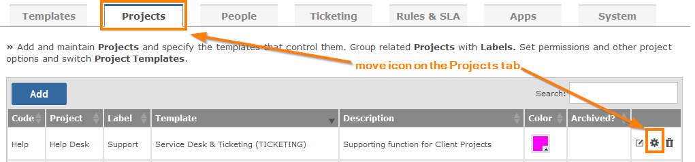
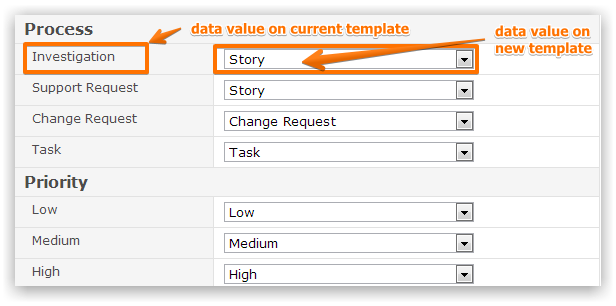

Every project is created from a Template, which through screens and custom fields defines the data it captures, through status values its workflow, as well as its menu, priority, severity, time recording, links and resolution values. However, occasions may arise where you wish to move a project from one Template to another, particularly if project data has been imported from elsewhere or you have loaded a new Template from an external source.
Navigate to the Projects tab of the Customize section and click on the Move icon

You can then select the new (destination) template to switch to.
You will be prompted to map every element of the Project Template with the exception of the menus, which you must manually set, from the current Template to the new one.

You must confirm twice with the two checkboxes at the end of the screen that you wish to proceed as this is a critical operation with the capacity to significantly alter your projects.
WarningThe process is irreversible so you are advised to backup your database before you proceed